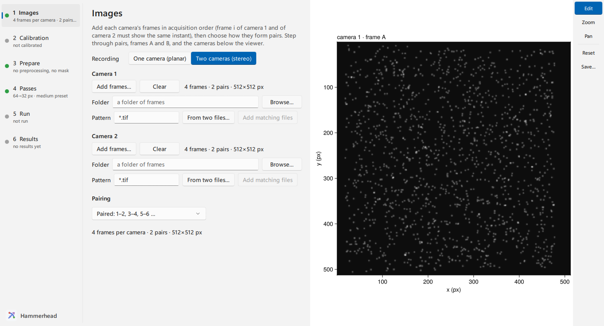
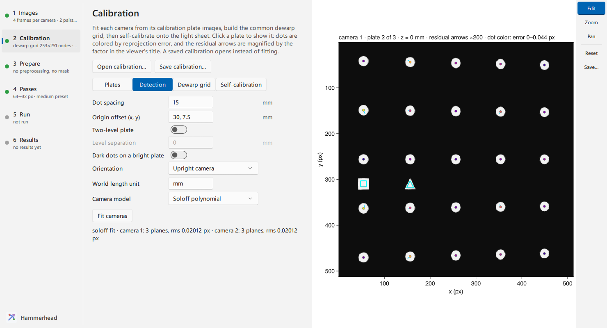
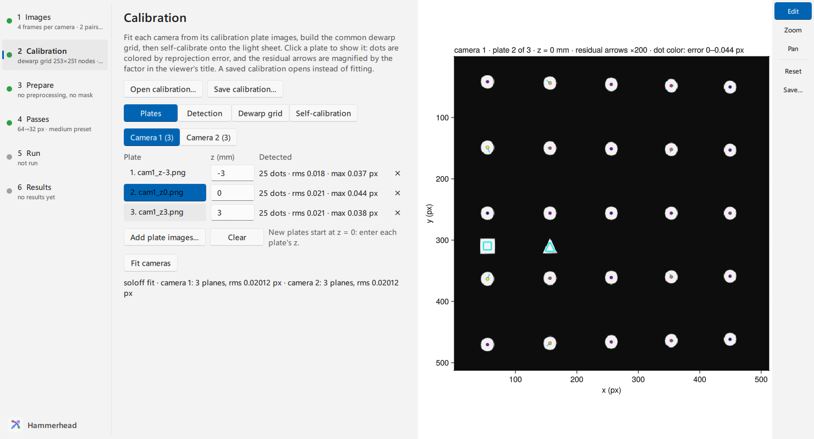
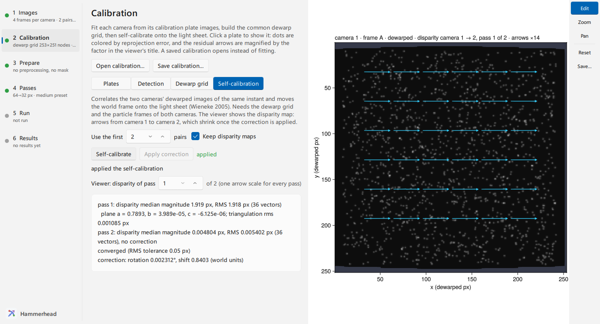
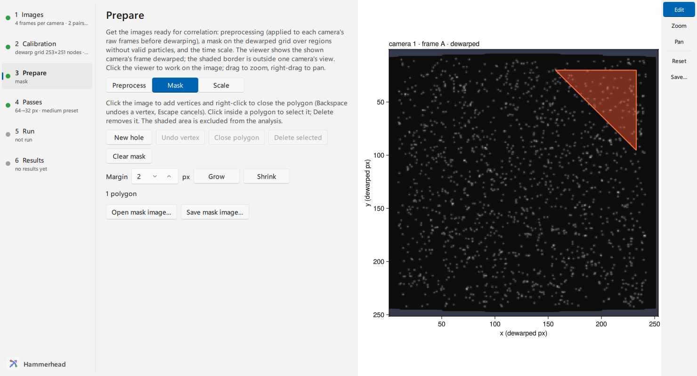
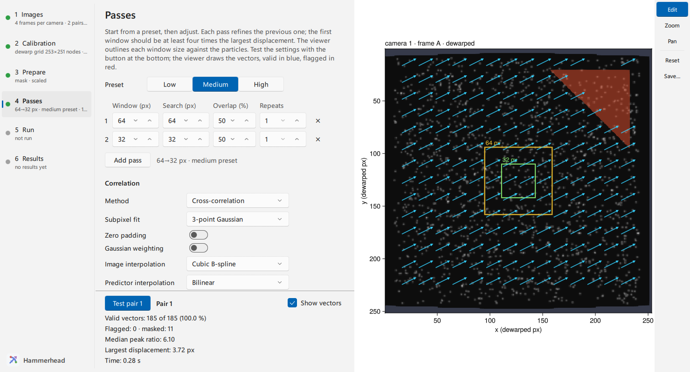
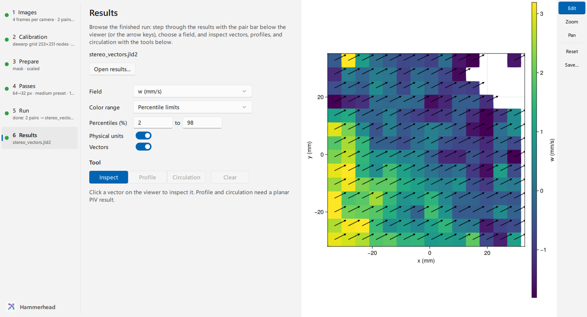

Run stereo PIV in the GUI
For a two-camera recording, the Hammerhead window takes both cameras' frames of the same instants and each camera's calibration plate images. It calibrates both cameras, reviews the fits, builds the common dewarped grid, moves it onto the light sheet, and then prepares, tests and runs the recording as for one camera. The result is three velocity components on a world-coordinate grid. For the geometry behind each step, see Stereo geometry and self-calibration; for the same steps in a script, see Calibrate a real stereo rig.
Open the window
Install the GUI package with pkg> add HammerheadGUI. Start Julia with several threads, so fits, tests and runs leave the window responsive:
# julia -t auto
using HammerheadGUI
wf = hammerhead(type = :stereo)or choose Two cameras (stereo) under Recording on Images. The call returns the window's StereoWorkflow when you close the window. Pass each camera's frames to start further along: hammerhead(files1 = cam1_paths, files2 = cam2_paths) (camera inputs start a stereo session by themselves).
The steps on the left run in order: Images → Calibration → Prepare → Passes → Run → Results. Camera 1 and Camera 2 in the bar below the viewer choose which camera the viewer shows, on every step. The viewer, the step rail, the pair bar and the pop-out work as for one camera; Analyze an image pair in the GUI describes them.
Add both cameras' frames
On Images, click Add frames… under Camera 1, then under Camera 2. Entry i of both lists must show the same instant, so add each camera's files in acquisition order. One Pairing rule and one representative pair apply to both cameras. The step names the camera and the problem when the lists disagree: different pair counts, frames of different sizes, or frames of another size than the camera was calibrated for.

Calibrate the cameras
Calibration has four pages: Plates, Detection, Dewarp grid and Self-calibration. The viewer shows the selected plate image of the shown camera. Save calibration… above the pages writes both cameras, an applied self-calibration and the dewarp grid to a file; Open calibration… reads one, or the calibration stored with stereo results, instead of fitting plates (see Reuse a calibration).
Add the plate images
On Plates, choose Camera 1, click Add plate images…, and type each plate's z position in the z column; new plates start at z = 0. Repeat for Camera 2. A Soloff fit needs plates at three or more z positions, a pinhole fit two. A two-level plate contributes two planes per image. Plate images added as files appear on the viewer after the first fit, which loads them.
Set the detection and the camera model
On Detection, describe the plate:
- Dot spacing in world units (the World length unit, mm by default).
- Origin offset (x, y): where the origin dot sits relative to the square marker. Both cameras use it to agree on the world origin, so set it whenever the plate has a marker.
- Two-level plate and its Level separation; Dark dots on a bright plate for inverted plates.
- Orientation: Upright camera takes +X towards image-right and +Y towards image-up. Choose From the fiducial markers for rolled cameras when both the square and the triangle marker are visible.
- Camera model: Soloff polynomial follows lens distortion and refraction; Pinhole needs fewer planes.
Click Fit cameras. Detection and fitting run in the background; the status line reports each camera's plane count and RMS reprojection error, or the reason a camera has no fit. Changing the model refits at once. Changing a plate or a detection setting marks the fit out of date until you fit again.

Read the fit
Back on Plates, each plate lists its detected dots and RMS error. Click a plate to show it. On the viewer, dots are colored by reprojection error, the fiducial markers are outlined, and the residual arrows are magnified by the gain named in the title, so sub-pixel errors are visible.

- Small arrows in random directions are detection noise; this is a good fit.
- Arrows that turn smoothly across the image point to a model limit or refraction: compare the Soloff and pinhole fits.
- Large errors on a few dots, or on one plate only, point to detection or a wrong z: check the plate image and its z value.
- Check that the outlined square marker is the same physical marker in both cameras; a different marker shifts one camera's world origin.
Calibrate a real stereo rig gives the residuals measured on a real plate.
Choose the dewarp grid
The fit builds the common grid both cameras are dewarped onto, and every later step works on it. On Dewarp grid:
- Coverage: Seen by both cameras (the usual choice) or Seen by either camera. Nodes outside a camera's view are excluded either way.
- Node spacing:
automatches the coarser camera's pixel size. A coarser spacing makes the dewarped images smaller and faster to correlate; keep it finer than the vector spacing you want. - Plane z: the world plane the grid lies in, normally the light sheet's nominal position. A positive Margin shrinks the grid on every side; a negative one grows it.
A changed option rebuilds the grid; Build grid rebuilds it on request. The status line gives the grid size, spacing and z.
Move the grid onto the light sheet
The plate and the light sheet rarely occupy exactly the same plane. Self-calibration measures the disparity between the two cameras' dewarped particle images of the same instant and moves the world frame onto the sheet ((Wieneke, 2005)). On its page, choose how many of the first pairs to use (every frame of those pairs, camera 1 against camera 2), then click Self-calibrate. It uses the current preprocessing and mask. The report lists, per pass, the disparity between the cameras and the fitted sheet plane z = a + b·X + c·Y, and ends with the total correction. A pass without a plane only measured the result. The viewer shows the shown camera's dewarped frame under the disparity map of the pass chosen beside Viewer: disparity of pass: arrows point from camera 1's view of the particles to camera 2's, drawn at the first pass's scale for every pass, so the correction shows as shorter arrows. Click Apply correction to use the corrected dewarpers.

In this example the light sheet lies 0.8 mm from the plate's z = 0. The first pass measures a disparity of about 1.9 px and fits a = 0.79 mm with negligible tilt; after the correction the disparity falls to 0.005 px, below the 0.05 px tolerance, so the report says converged. A result that does not converge, or a large triangulation RMS, calls for the disparity checks in Calibrate a real stereo rig before you apply it.
Apply the correction last. A new fit or grid option rebuilds the dewarpers from the plates and drops the correction; self-calibrate again afterwards. Keep disparity maps (on by default) keeps the maps for the viewer; the returned workflow's wf.calibration.selfcal[].report holds them too, for the checks in Calibrate a real stereo rig. Once the correction is applied, Save calibration… keeps it for later sessions.
Prepare the dewarped images
On Prepare, the viewer shows the shown camera's frame dewarped onto the grid, in grid nodes. The shaded border is where at least one camera has no view; it is excluded from every analysis.
- Preprocess: the operations and the correlation probe of the planar window. The steps run on the raw frames before dewarping, and the probe correlates the shown camera's dewarped pair. One list serves both cameras until you switch on Separate steps per camera; the list then shows the shown camera's steps. Estimate background subtracts each camera's own background, estimated from its first frames, and switches to separate lists.
- Mask: draw polygons on the dewarped grid, as for one camera. One mask applies to both cameras. Stereo analysis has no region page; mask the part of the grid you do not want instead.
- Scale: vectors are already in the calibration's world units per frame. Type the time between the paired exposures and its unit to show velocities.

Choose the passes, test, and run
Passes (with its test bar) and Run are the one-camera steps; the presets size the windows to the dewarped grid. Both cameras run with the same passes, and their two-component fields combine into three components at every node. Test pair runs the call the batch will run, and the viewer shows the in-plane vectors on the shown camera's dewarped frame. Run writes one stereo result per pair, with the settings, as each pair finishes; an ensemble writes one pooled stereo result when both cameras' correlations have been summed over every pair.

Inspect the results
Results shows stereo fields on world axes, with +Y up: the components u, v and w, their magnitudes, and their uncertainties when the final pass estimates them. Inspect reads one vector. The profile and circulation tools work on planar results.

Save and reuse the settings
Save settings… writes the passes, preprocessing (per camera when the lists are separate), mask and scale as a core recipe; Open settings… reads one, or the settings stored in a results file. Planar settings with an analysis region do not open here: remove the region, or mask the grid instead. A script runs the same settings with apply_recipe(recipe, pairs1, pairs2, dw1, dw2); see Save settings and reuse them.
Reuse a calibration
Save calibration… on the Calibration step writes the rig with save_calibration; open it with Open calibration…, or start a window with it: hammerhead(calibration = "rig.jld2"). A run's results file stores the calibration that produced it, so Open calibration… on a results file reproduces that rig. Changing a dewarp grid option rebuilds the grid for the opened cameras.
In a script, load_calibration("rig.jld2") returns the dewarper pair, and a pair can also be built from the plate images:
using Hammerhead, HammerheadGUI
zs = [-3.0, 0.0, 3.0] # plate positions, mm
detect = (; spacing = 15.0, origin_offset = (30.0, 7.5))
cr1 = CalibrationReview(cam1_plate_paths, zs; detect...)
cr2 = CalibrationReview(cam2_plate_paths, zs; detect...)
dw1, dw2 = build_dewarpers(cr1, cr2) # common grid at z = 0
wf = hammerhead(files1 = cam1_paths, files2 = cam2_paths,
dewarpers = (dw1, dw2), settings = "stereo_settings.toml")The window then starts at a calibrated rig: self-calibrate on the recording's frames, or go straight to Prepare. To review one camera's fit first, run calibration_review(cr1) in a separate Julia session: it is a GLMakie window, and some graphics drivers fail when GLMakie and Qt windows share a process. Once a GLMakie window exists, hammerhead throws an error asking you to restart Julia; calibration_review, selfcal_review, and result_explorer warn when a workflow window was already open.